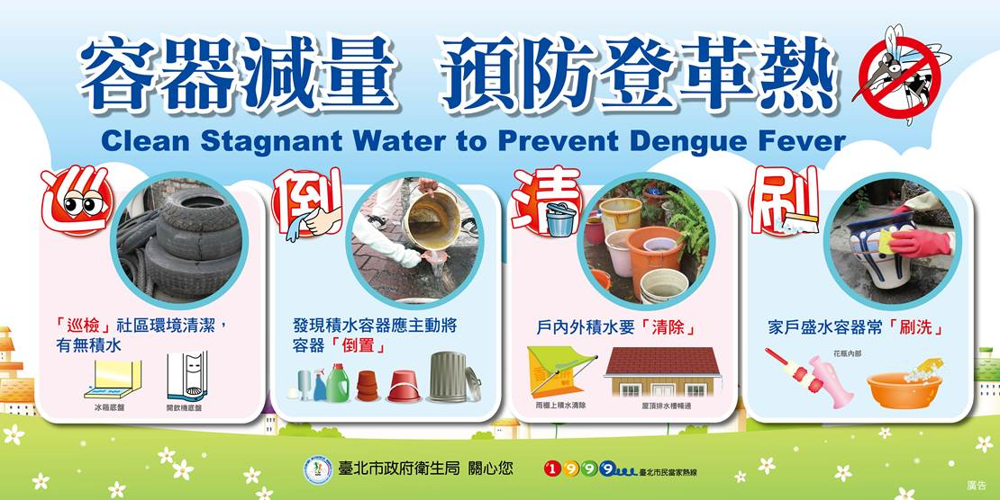

近日受西南氣流影響，尤其南部縣市因豪大雨造成部分地區淹水或積水，環保署提醒民眾只要有一點積水，便可孳生很多登革熱病媒蚊孳生源，並建議下載該署登革熱防治宣導影片，民眾只要身體力行10分鐘即可做好「巡、倒、清、刷」清理動作，而能清除居家戶內外環境積水容器，落實登革熱病媒蚊孳生源清除工作。
本年全國本土病例已有372例，疫情雖有趨緩，但仍較往年同期病例數稍多，所以防疫工作絕不容忽視，為了防止豪雨後居家或戶外積水容器孳生登革熱病媒蚊，環保署提醒民眾，記得儘速清除戶內外登革熱病媒蚊孳生源，其中民眾對於住家屋頂、菜園、花圃等社區環境，空地、空屋尤須加強巡查清理。並將積水清除及清除廢棄盆栽，留下的器物也要「刷洗」去除斑蚊蟲卵，妥善收拾或予以倒置。民眾可至環保署「清淨家園顧厝邊綠色生活網(EcoLife)」下載「清除登革熱病媒蚊孳生源自我檢查表」隨時檢視居家環境及自我防護建議事項，做好環境孳清與個人防蚊措施。
環保署再次呼籲民眾除加強孳生源清除外，另應作好避免蚊蟲叮咬的自我防護工作，如穿著長袖淺色衣物、加裝紗窗(門)、使用衛生福利部核准之防蚊液及正確使用環境用藥，民眾可至「環境用藥許可證照查詢系統查詢環境用藥相關資訊，環保署強調清除戶內外孳生源及環境整頓需要民眾長期配合，千萬不可鬆懈。
行政院環境保護署環管處 / 2016/07/25